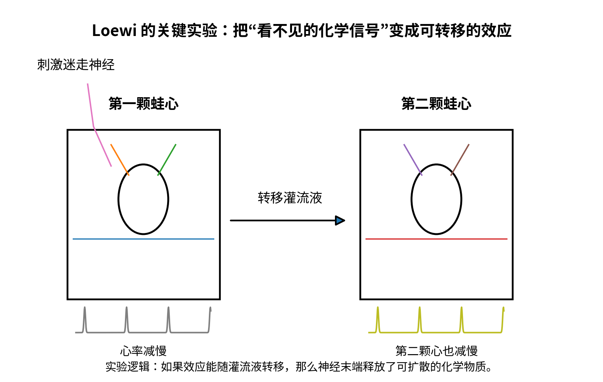
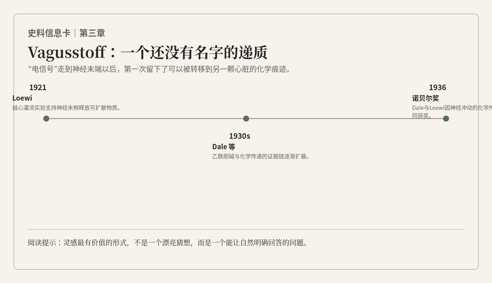

扬声器里的“啪”声像一颗小石子，落进我耳朵里还没沉下去，脚下的木板已经换成了另一间屋子的地面。这一次声音更慢，咚，咚，咚，隔一会儿又响。它不像神经脉冲，倒像有人在隔壁房间数着心跳。我循声走过去，看见桌上一只盛着液体的玻璃容器，旁边有人把袖子卷到了肘部。
扬声器里Adrian那一声短促的神经脉冲还在我耳边，下一秒，它忽然变成了另一种更低、更沉的节律。
咚。咚。咚。
我睁开眼，先看见窗外一片没有路灯的黑。屋里只有一盏台灯亮着，一个穿着睡衣外套的男人正弯腰翻找抽屉。他的头发乱得不像准备做实验，更像刚从床上被火警叫起来。桌上散着几张纸，其中一张薄得像随手撕下来的便笺，上面是一团几乎无法辨认的笔迹。
“找到了吗？”我下意识问。
他抬头看我，明显没有兴趣追究一个陌生人为什么凌晨三点站在自己的实验室里。“没有。”他说，“昨天写的那张还是看不懂。”
我看了一眼墙上的日历。1921年，格拉茨。
心脏一下比桌上的蛙心跳得还快。
Otto Loewi。
后来所有神经科学教材都会喜欢讲这个故事：一个实验设计在梦里出现，科学家半夜醒来匆忙记下，第二天却看不懂自己的字；第二个夜晚，同一个想法再次回来，于是他立刻赶去实验室。在讲述里，梦仿佛比实验还重要。可是桌上的装置没有因为梦而自动工作，青蛙也从不因为研究者兴奋，就比平常更愿意配合。
可真正站在Loewi身边，我很快发现事情没有这么浪漫。
他不是第一次想到“神经可能通过化学物质发挥作用”。十几年前，他和同时代的一些生理学家就已经认真考虑过类似可能。肾上腺素能够模仿某些交感神经作用，乙酰胆碱样物质能够产生类似副交感神经刺激的效应，这些线索一直在那里。梦没有凭空制造出一个理论，它只是突然给了Loewi一个更锋利的问题：如果神经末端真的释放某种化学物质，能不能把这种物质从一颗心脏的液体里取出来，再让另一颗心脏重复同样的反应？
我第一次意识到，所谓“灵感”可能不是突然知道答案，而是突然知道该怎么问。
Loewi已经开始准备实验。他的动作比我想象中快，甚至带一点焦躁。两颗蛙心分别被处理好，一颗保留迷走神经，另一颗作为接受液体的测试对象。心脏在含盐的营养液中继续规律收缩，玻璃管和记录装置把每一次搏动变成可以观察的变化。
我看着他连接刺激装置，忍不住问：“你确定现在做？天还没亮。”
“如果等到早上，”他说，“我可能又开始想太多。”
这句话很像他。Loewi给我的第一印象不是谨慎到近乎迟缓的那类生理学家。他有一种强烈的直觉感，情绪会随着实验一起上升和下降。装置不听话时，他会明显烦躁；曲线开始稳定时，整个人又像忽然年轻了几岁。他并不轻视严谨，但他的严谨不是冷的。他更像先被一个问题点燃，再逼着自己把火焰变成证据。
刺激开始。
第一颗蛙心慢了下来。
这并不新奇。刺激迷走神经会使心率下降，当时的生理学家早已知道。真正重要的是下一步。Loewi让那颗被刺激过的心继续在少量营养液中搏动，随后把这部分液体转移到另一颗心脏。
我几乎屏住呼吸。
第二颗心没有神经被刺激。
它却慢了下来。
房间里没有人说话。
我已经知道这个结果一百多年，所以我原以为自己不会惊讶。可当那颗第二心脏真的在我面前一下一下变慢时，我还是感觉后背发凉。因为这个实验最漂亮的地方不是它复杂，而是它几乎不给解释留下藏身的地方。
如果效应只存在于第一颗心，那可能只是电刺激沿神经直接影响了心肌。如果第二颗心在没有神经刺激的情况下也变慢，而唯一被带过去的是第一颗心周围的液体，那么“作用”本身必然以某种可以进入液体、可以被转移的形式存在。
这是一个把不可见机制变成可搬运证据的实验。
“再来一次。”Loewi说。
我愣了一下。“已经出来了。”
“所以更要再来一次。”
那一刻我突然想起自己曾经做过的许多分析。某个相关突然显著，第一反应往往是截图、保存、开始想故事；真正困难的是第二天重新打开数据，把最希望是真的那部分当成最可疑的部分，再做一次。Loewi的兴奋是真实的，可兴奋并没有让他停止重复。
第二次的结果仍然出现。随后是更多控制。换新鲜液体，第二颗心不会无缘无故减慢；刺激另一类加速神经，得到的液体又能让测试心脏出现相反方向的变化。渐渐地，一个“神经直接把电传给器官”的简单模型开始裂开。
Loewi没有立刻把那种物质叫作乙酰胆碱。他叫它Vagusstoff——“迷走神经物质”。这个名字现在听起来笨拙，却有一种科学早期特有的诚实：我知道这里有某种东西，我知道它做什么，但我还不知道它究竟是什么。
“为什么不直接叫乙酰胆碱？”我问。
他看了我一眼。“因为我还没有证明它是。”
我被这句话堵住了。
在我的时代，命名太容易了。一个聚类可以被命名成一个亚型，一条潜变量可以被命名成“情绪轴”，一个相关网络可以被命名成某种机制。名字一旦写上去，就会悄悄制造一种“我们已经理解它”的错觉。Loewi明明已经做出了足以改写神经生理学的实验，却在最关键的地方停住，只说：这里有一种物质。
不是所有克制都来自保守。有些克制是为了给下一次实验留位置。

完整图注与资料说明
核心不是“蛙心”，而是把不可见的中介机制转化成可转移、可复现的效应。几周之后，我开始发现这项实验真正改变的并不只是“神经—心脏”关系。
当时的神经生理学有一场持续多年的争论，后来经常被概括成“soup versus sparks”——汤与火花。化学派相信神经末端释放物质，电学派更倾向于认为兴奋可以像电一样直接跨过连接。这样的二分今天看起来有点粗糙，因为我们知道神经系统既有沿膜传播的电信号，也有大量依赖化学递质的突触传递，甚至还存在真正的电突触。但站在1921年，问题并没有被拆解得这么清楚。
Loewi的实验厉害之处，是它没有试图用一百个间接现象说服所有人，而是找到一个特别窄的入口：如果神经刺激产生了化学介质，那种介质应该能够离开原来的神经，在另一颗心脏上继续工作。
这让我第一次真正理解“决定性实验”这个词。
决定性并不意味着一次实验就让整个领域闭嘴。Loewi的结果后来仍然被质疑、重复、修正，Vagusstoff的化学身份也需要更多证据。但是，一个好实验会让讨论的地形发生变化。争论不再是“化学传递听起来合不合理”，而变成“那种可转移物质到底是什么、在哪里释放、作用有多广”。
科学真正向前走的时候，问题常常不是被消灭，而是被升级。
某天下午，Loewi翻出一封来自英国的信。我看到署名时忍不住多看了一眼。
Henry Dale。
“老朋友？”我问。
“很老。”Loewi说。
他们在年轻时就曾在伦敦的生理学实验室相识，后来走上不同道路，却一直知道彼此在做什么。Dale比Loewi更像我想象中的“标准英国科学家”：措辞谨慎，分类清楚，对一个概念要使用什么词近乎挑剔。几年后我在伦敦真正见到他时，这种差异更明显。
Dale的桌面比Loewi整齐得多。文件被分门别类，实验记录写得规矩，连他指出别人一句话不够准确时，语气都像是在修改一份校样。他并不缺乏热情，只是热情被包在逻辑里面。
“Loewi做的是一件很漂亮的事。”他对我说。
“所以Vagusstoff就是乙酰胆碱？”
“很像。”
“那就是？”
“你为什么这么着急？”
我发现这群人似乎轮流教我不要提前写结论。
Dale早在1914年前后就系统研究过乙酰胆碱的药理作用。他发现这种物质能够产生两类不同效应，并分别用“muscarinic”和“nicotinic”去描述。后来，乙酰胆碱在动物组织中的存在被更明确地证实，Loewi的Vagusstoff也越来越接近它的真实身份。更重要的是，Dale和同事不断把“化学传递”的范围向外推：自主神经节、神经肌肉接头，越来越多过去看起来像一条电线直接接过去的地方，都出现了化学介质的痕迹。
我跟着他们看过一次肌肉灌流实验。刺激运动神经以后，灌流液里可以检测到乙酰胆碱样活性；即使肌肉因为药物作用而不再收缩，神经末端仍会释放这种活性物质。Dale喜欢这种实验，因为它把两个原本纠缠在一起的过程拆开：释放是神经末端的事情，反应是靶细胞的事情。靶细胞不反应，不代表上游没有释放。
“拆开来看。”他对我说，“不要把一条链的末端当成整条链。”
这句很普通的话后来救了我很多次。现代多组学研究最容易遇到的困难之一，就是所有东西一起变化：微生物变了、代谢物变了、脑影像变了、症状也变了。相关网络可以很漂亮，却无法自动告诉你哪一步在前、哪一步在后。Dale做的事情并不“多组学”，但逻辑一模一样：把过程拆成可干预的环节，然后逐段问因果。
他后来提出“cholinergic”和“adrenergic”这样的功能性术语，用释放什么化学递质来描述神经纤维，而不是只按它从哪里长出来分类。命名在这里不只是给东西贴标签，而是在重新组织问题。一个好的术语，应该让新的实验更容易被设计，而不是让旧现象听起来更高级。
有一天我问Dale：“如果Loewi没有做那个梦呢？”
他没有马上回答，而是把眼镜往上推了一点。
“那应该会有别人找到证据。”他说，“但也许会晚一些。”
“所以梦很重要？”
“当然。”
“那为什么你听起来一点都不浪漫？”
他终于笑了。“因为一个领域如果只能靠别人做梦才能前进，那说明这个领域的方法出了问题。”
我也笑了。
这大概就是Dale式的浪漫。
1936年12月，我第三次站在斯德哥尔摩。

完整图注与资料说明
依据原始论文与诺奖资料重绘。这一次，我已经不再把诺贝尔奖典礼当成穿越旅程里的“终点动画”。见过1906年的Golgi和Cajal，也见过1932年的Sherrington和Adrian以后，我开始注意那些奖项旁边更细的线：谁和谁年轻时在同一间实验室待过，谁读过谁的论文，哪个技术从一个城市传到另一个城市，哪个问题花了十几年才被重新问出来。
Loewi和Dale共同获得1936年的生理学或医学奖，获奖理由是“与神经冲动化学传递有关的发现”。两个人各得一半。
我在典礼前见到Loewi时，他比凌晨三点那个急着做蛙心实验的人老了很多。头发已经花白，动作也慢下来，但一说到实验，手还是会无意识地在空中比划。十年前，也就是1926年，他曾经来过瑞典，在国际生理学大会上演示自己的基本实验。那时他只是把一颗心怎样影响另一颗心展示给同行看。十年后，他因为同一个问题重新回到这里。
“你还记得第一次来斯德哥尔摩吗？”我问。
“当然。”他说，“我那时候花了很多空闲时间看市政厅。”
他记得建筑，也记得实验。人到了某个年龄，荣誉和细节会奇怪地并排存在。
Dale在宴会上的答谢比我预想中更私人。他说，能与自己的老朋友Loewi分享奖项，让这份荣誉更加令人高兴。他提到他们大约三十五年前在伦敦实验室相识，那时谁也不知道，两个人会从不同方向走向同一个问题。
我看着他们坐在灯光下，想起多年以前的另一场颁奖。Golgi和Cajal被安排在同一个奖项里，却始终没有赞同彼此；Loewi和Dale走的道路不同，两种证据却在这里接上了。灯光落在同样的奖章上，奖章并不知道该替谁辩护。
Loewi在宴会上说，科学家本来已经拥有一件很奢侈的事——可以把一生投入增加知识——如果最后还因此受到奖励，就更应该同时感到骄傲和谦卑。
我没有把这句话记成名言。真正让我记住的是他随后端起酒杯时微微发抖的手。
奖章很重，实验却开始于一张看不懂的纸条。
回到旅馆以后，我把这几章穿越以来随身带着的笔记摊在桌上。Cajal告诉我，神经元彼此独立；Sherrington让我看到独立细胞怎样通过兴奋和抑制组成整体；Adrian让我听见沿神经纤维传播的脉冲；Loewi和Dale又告诉我，当脉冲走到末端，它可以变成一种化学语言，跨过细胞之间的缝。
我忽然发现自己一直在使用“电”这个词，却从来没有真正解释过它。动作电位到底是什么？为什么一个活细胞能从负几十毫伏突然冲到正电位，又在几毫秒内恢复？为什么它沿着一根细长的轴突传播，却不会像普通导线一样迅速衰减？如果这是某种离子运动，究竟是哪一种离子，在什么时候，穿过什么？
我低头看笔记，纸上的“chemical transmission”几个字开始被水一样的阴影覆盖。先出现的是海腥味。然后是风。最后，我听见有人在不远处抱怨：“水银还是不肯往下掉。”